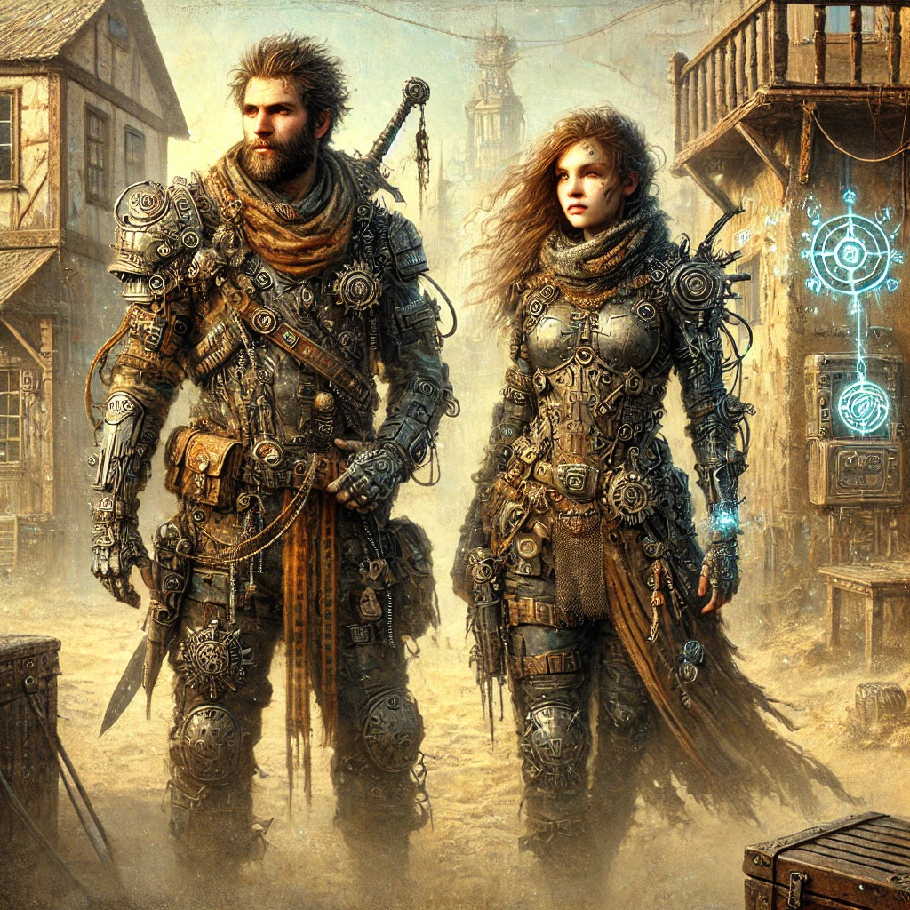
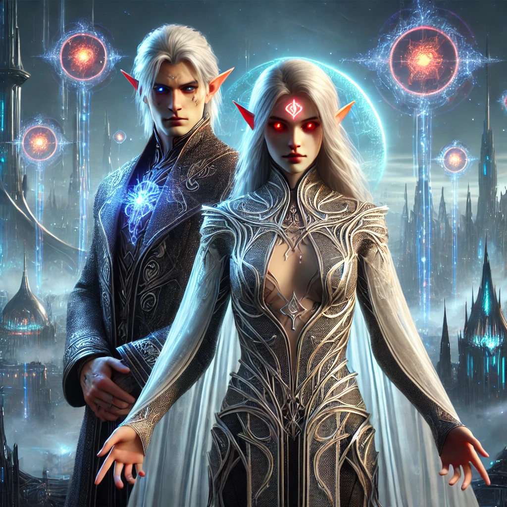
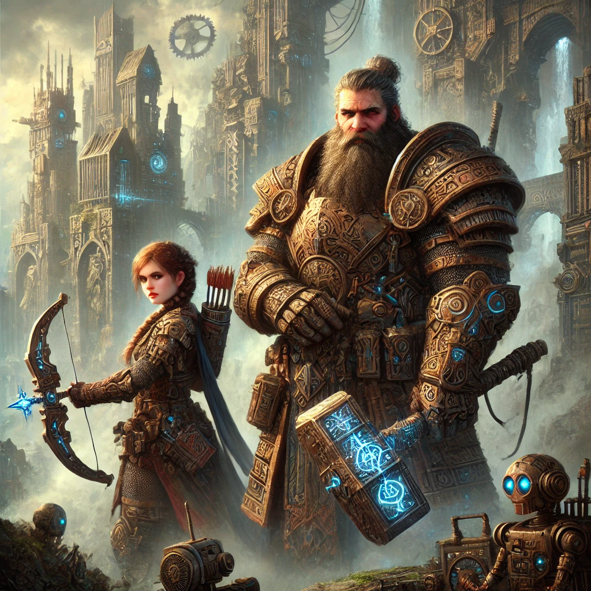
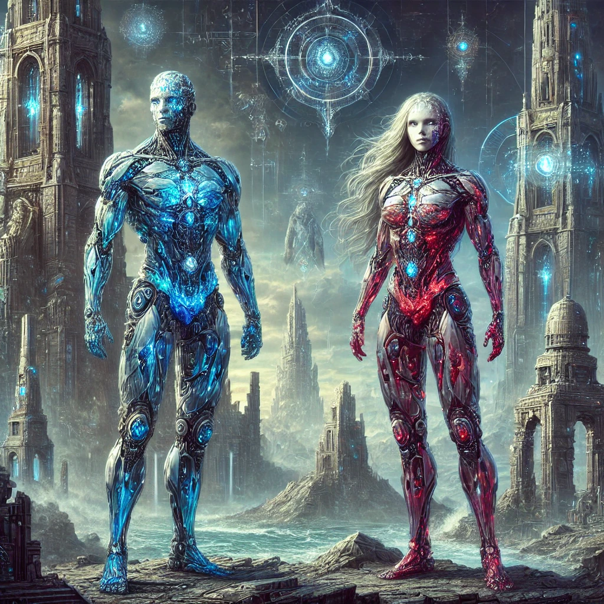
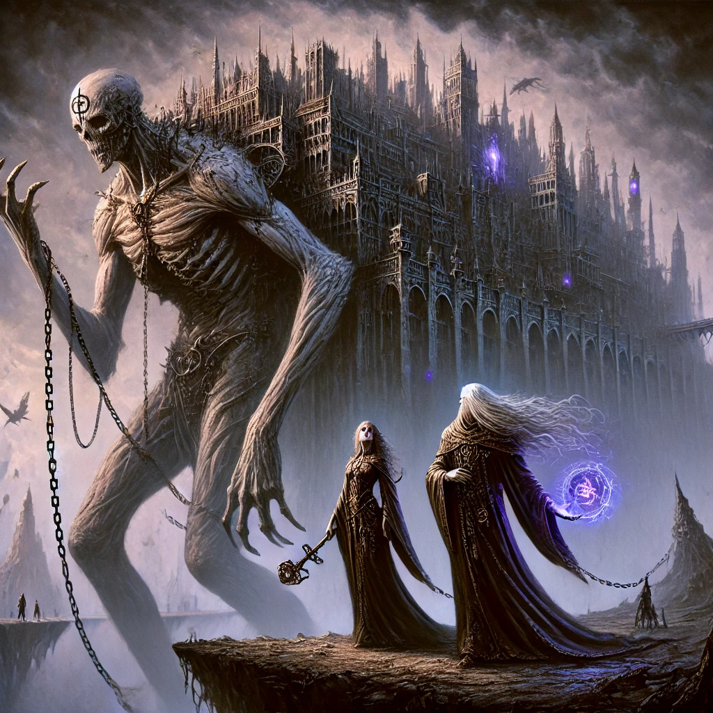
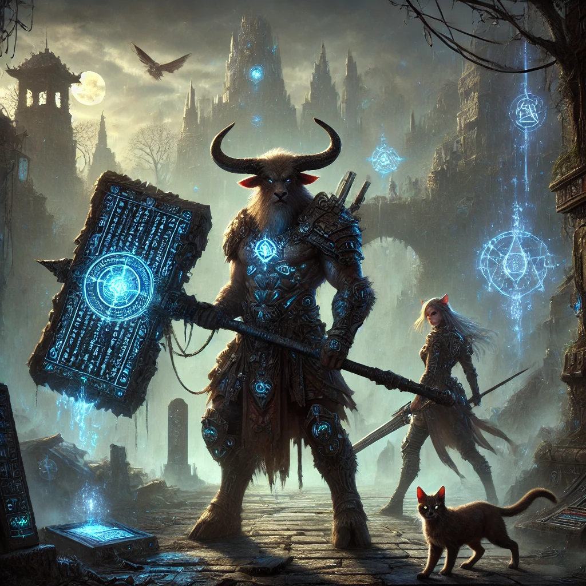

Elige una de las 6 razas jugables para tu ficha de personaje.

Hijos del “Primer Aliento”, aprendieron a elegir entre azul y rojo sin inclinarse ante ninguno: libres para tejer fe, redención y rebeldía en Serenatia, Aurodon y Umbraeve; puente vivo entre magia y maldición.FIS 1 · DES 1 · SOC 2 · MEN 1 · NMag 1 · NMal 1

Nacidos en Nimbosia, islas flotantes donde el equilibrio es ley: tres Reinas custodian memoria, creación y frontera; cada mirada brilla con un elemento… salvo los Eil-Narim, que eligen guardia gris o exilio.FIS 1 · DES 2 · SOC 2 · MEN 1 · NMag 1 · NMal 0

Forjan con la Maldición como otros con el fuego: casas herreras, ciudades-forja y un rigor amable; su secreto más solemne transforma la chispa azul en gemas rojas que alimentan mil hornos y juramentos.FIS 2 · DES 1 · SOC 1 · MEN 1 · NMag 0 · NMal 1

No nacen: despiertan. Un núcleo azul o rojo les marca el pulso mientras buscan Technomaquia y responden a la Llamada del Eco; reliquias caminantes que a veces recuerdan vidas que no son suyas.FIS 3 · DES 1 · SOC 1 · MEN 1 · NMag 1/0 (núcleo) · NMal 0/1 (núcleo)

Señores de ciudades que caminan sobre colosos domados; piel de ceniza, ojos abisales y voluntad tallada en la Luna Roja: su ciencia es la dominación, su arquitectura, un laberinto de obediencias y silencios.FIS 1 · DES 2 · SOC 1 · MEN 2 · NMag 0 · NMal 1

Estirpe de instinto y memoria de ruinas: castas animales que vigilan, cazan o recuerdan; divididos entre Céfidon (aliento azul) y Ultharia (engranaje maldito), unidos por un juramento que hizo de dos ciudades una república ardiente.FIS 2 · DES 1 · SOC 1 · MEN 1 · NMag 1 (Céfidon) / NMal 1 (Ultharia)